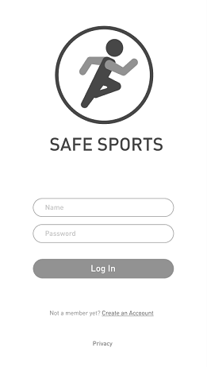
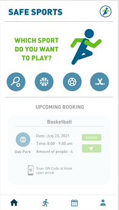
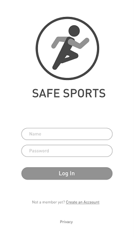
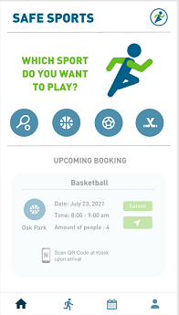

This was a group project I completed for my interface design class. The purpose of the project was to create an interface for an app using the skills we learned in lecture. So our team decided to do a recreational activities booking app for the city of Vancouver during Covid-19.
 



We first decided as a group what topics we could choose and we brainstormed possible domains for our app such as health, environmental sustainability, pets, etc. After we listed as many ideas as we could, we then discussed which idea we liked the most and ended up choosing to make an app that lets residents of Vancouver book scheduled times to use recreational spaces such as basketball or tennis courts during Covid-19.
From there we refined our idea further by focusing on the audience of the app, the features that users have access too, and what possible sports facilities they could book. Once we figured out all the background information we needed, we then started working on a wireframe for the app. We also decided to create a kiosk station at each recreational facility so residents could sign in to use the space they booked. Once we completed our wireframes we started filling in the wireframe with the information we gathered and implemented colours and styling to the app. We did this for our kiosk as well and then we finished the project by creating a video that overviews the entire app and how it would be used
Our main issue that we had when working on this project was mainly communicating with each other. This project was during the first online semester so a few members of the group were in different time zones while still attending class. This ended up causing some difficulty meeting up as a team to work on the app. We resolved this issue by setting fixed group meeting times and assigning work to be completed by the next meeting for each team member. This ensured that we always had something complete for each meeting and we would just have too combine each individual part when we worked together.
This project helped me improve my teamwork skills by learning how to accommodate for scenarios where working in a team might be difficult. The project also introduced me to figma as an interface design program which I was able to learn and help implement in our group project.